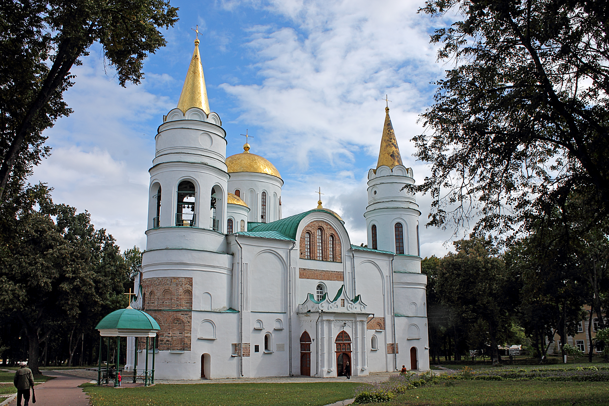
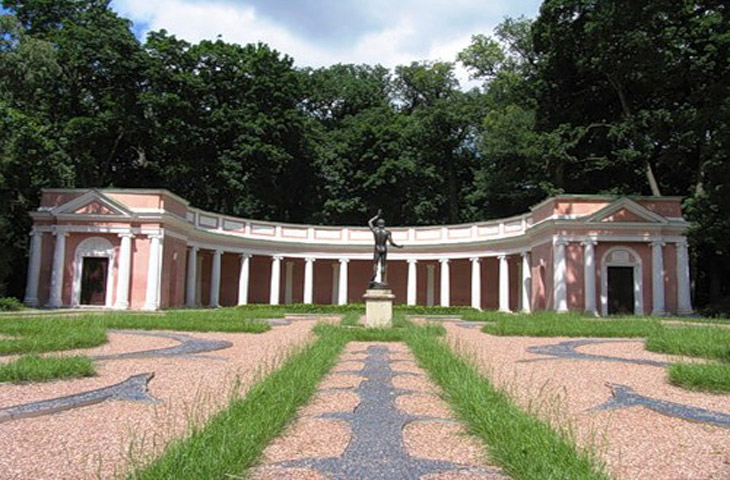
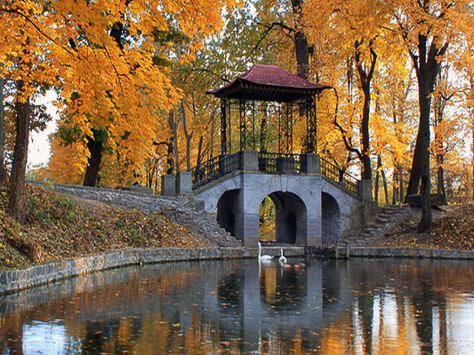
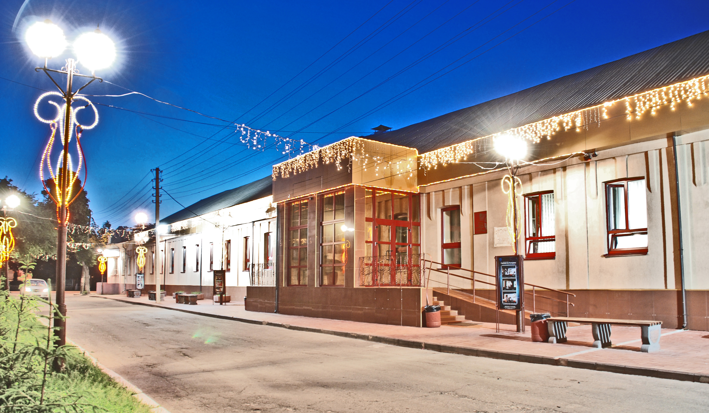

Преображенський собор був збудований у 1833-1839 роках. Замовниця - Олександра Браницька була похована в неосвяченому приділі.

Преображенський собор був збудований у 1833-1839 роках. Замовниця - Олександра Браницька була похована в неосвяченому приділі.

Колонада "Луна" посіла перше місце в списку чудес міста. Вона має вишуканий вигляд та унікальну акустику для відвідувачів.

В 1793 р. Франциск Браницький починає облаштування парку, який назвав на честь своєї дружини Олександри.

Київський академічний обласний музично-драматичний театр — це осередок культури та мистецтва у Білій Церкві.